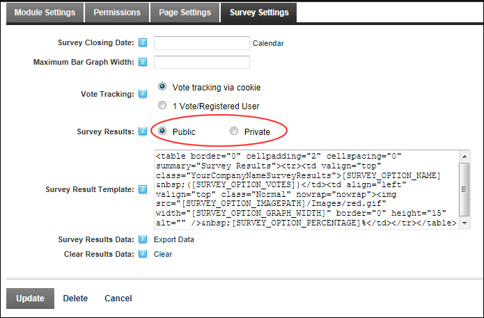

Setting Survey Results as Public or Private
How to set the survey results as public to all users authorized to view the module or private for Administrators only.
-
- Select the Survey Settings tab.
- At Survey Results, select Public or Private as required.

-
Click the Update button.